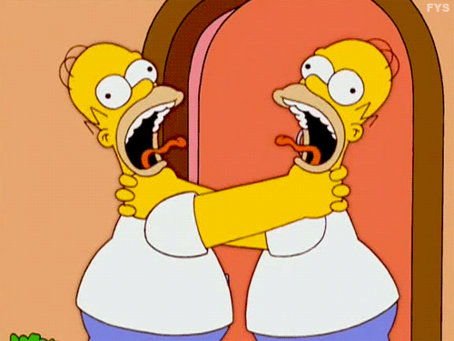
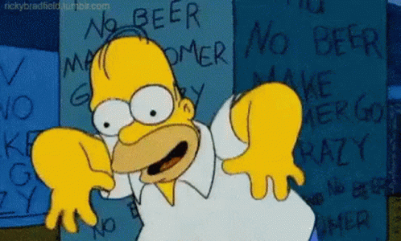
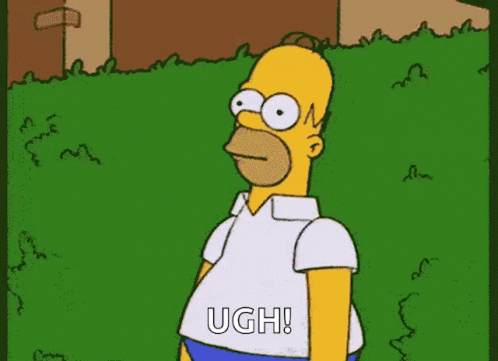

Homer Jay Simpson
Homerilla ja hänen vaimollaan Margella on kolme lasta: Bart, Lisa ja Maggie. Perheen elättäjänä Homer työskentelee Springfieldin ydinvoimalassa. Homer ilmentää useita työväenluokkaisia amerikkalaisia stereotypioita: hän on hoitamaton, epäpätevä, kömpelö, laiska, paljon juova, tietämätön ja ylipainoinen. Pohjimmiltaan hän on kuitenkin myös kunnollinen mies, joka on kiihkeästi omistautunut perheelleen.
Dan Castellaneta
IMDB

